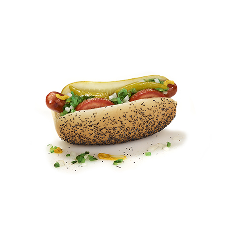

Hot Dogs

- Jumbo Hot Dog
Everything includes mustard, relish, celery salt, freshly chopped onions, sliced red ripe tomatoes, kosher pickle, and sport peppers piled onto a steamed poppy seed bun.
- Jumbo Chili Cheese Dog
Everything includes chili, cheese, and raw onions.
- Hot Dog
Chicago-style hot dog with everything, which includes mustard, relish, celery salt, freshly chopped onions, sliced red ripe tomatoes, kosher pickle and sport peppers piled onto a perfectly steamed poppy seed bun. Chicagoans call this “dragging the dog through the garden.”
- Plant-Based Garden Dog
Portillo's new plant-based hot dog made with 100% plant-based protein and crafted for Portillo's by Field Roast. It comes with everything, which includes mustard, relish, celery salt, freshly chopped onions, sliced red ripe tomatoes, kosher pickle and sport peppers piled onto a perfectly steamed poppy seed bun.
- Chili Cheese Dog
Hot dog served with American cheese and topped with chili and chopped onions.
- Char-Grilled Maxwell Street Polish Sausage
Maxwell St. in Chicago is where this style of Polish sausage was born more than 75 years ago. Our founder, Dick Portillo, frequented the famous corner of Maxwell St. & Halsted St. as a young boy, where he recalls the sweet smell of grilled onions from the Polish sausage street carts. Dick brought the Maxwell St. Polish to the menu so everyone could enjoy the taste of Maxwell Street at Portillo’s. The Portillo’s Maxwell St. Polish is a Makowski’s Real Sausage, grilled to perfection, and topped with lots of yellow mustard and sliced grilled onions.
- Char-Grilled Polish Sausage
Char-grilled polish sausage, made like our Chicago-style hot dog with everything, includes mustard, celery salt, freshly chopped onions, sliced red ripe tomatoes, kosher pickle, and sport peppers piled onto a steamed poppy seed bun.
The Homepage
Menu